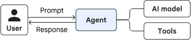
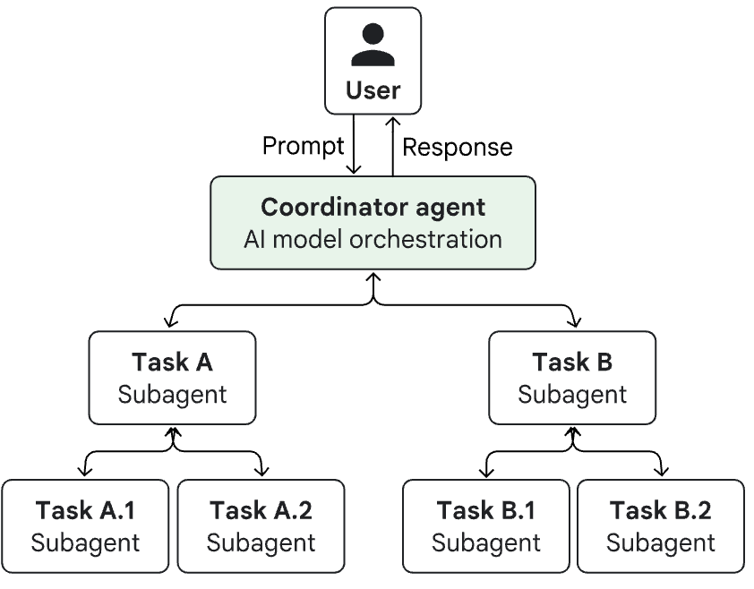

Contents
- Frontend framework: 사용자가 대화/작업을 요청하는 UI (part1)
- Agent development framework: 에이전트 로직(루프, 상태, 도구 연결)을 만드는 프레임워크 (part1)
- Agent memory: 대화/세션 상태와 장기 기억 저장 (part1)
- Agent tools: 검색, DB, 사내 API 등 “행동”을 수행하는 도구 묶음 (part1)
- Agent design patterns: 싱글 에이전트 vs 멀티 에이전트 등 구조 패턴 (part3)
- Agent runtime: 에이전트 애플리케이션이 실제로 돌아가는 실행 환경 (part3)
- AI models: 추론/의사결정 엔진(part 3)
- Model runtime: 모델을 서빙하는 인프라(관리형 API/컨테이너/GKE 등) (part 3)
Introduction

Agentic AI를 한 문장으로 정리하면, 사용자 의도를 이해하고 → 여러 단계 계획을 세우고 → 도구를 호출해 실행까지 끝내는 자율 시스템이다. 단순히 “답변을 생성하는 모델”이 아니라, 계획(Planning) 과 도구(Tools) 를 통해 실제 업무를 완료하도록 설계된 아키텍처인 것이다.
사용자의 목적에 따라서, 자신의 문제를 풀 최대한 효율적인 agent framework를 구축하면 되는 것이고, 후보군으로는 다양한 framework가 존재한다. 이번 시간에는 어떠한 framework들이 존재할 수 있는지 google에서 제공하는 문서를 바탕으로 쭉 정리해보자.
Choose a design pattern for your agentic AI system | Cloud Architecture Center | Google Cloud Documentation
Single - agent system

Single-Agent System(단일 에이전트 시스템)은 하나의 AI 에이전트가 사용자의 요청을 이해하고, 필요한 계획을 세운 뒤, 도구를 사용해 작업을 수행하는 가장 기본적인 에이전트 구조이다.
복잡한 협업이 필요하지 않은 중간 수준의 워크플로우에 적합하며, 구조가 단순해 구현과 디버깅이 비교적 쉽다. 또한 멀티 에이전트 시스템에 비해 운영 비용과 관리 부담이 낮다는 장점이 있습니다.
Multi-agent sysetms
하지만, 실제 해결해야할 문제가 복잡해지면 우리 인간이 회사를 만든 것과 동일하게. 아래의 사진 처럼 multi - agent 시스템을 구축 할 수 있다.

멀티 에이전트는 다양한 구조로 설계가능하고, 여러 대표적인 구조들을 살펴보자.
Sequential pattern

가장 기본적으로, 연이어 여러 step으로 작업하는 process의 경우, 연속적 패턴 agent가 적합하다. 예시로 내가 진행하는 CAD opeartion → Meshing → Fluid simulation → solid simulation → Sensitivity analysis의 경우 즉 반복적인 seqeuntial pattern에 적합하다.
Parallel pattern
동시에 여러 작업들을 진행하고 싶을때, 적합한 병렬 방식이다. 같은 task를 주어서 다른 모델들을 비교할수 도 있고, 서로 독립적인 일을 동시에 처리하면 속도가 굉장히 빠르다.

예를 들어서, 사용자가 “테슬라 최근 투자 리스크 분석해줘”라고 요청하면,
- Agent 1 → 최근 뉴스 수집
- Agent 2 → 재무제표 분석
- Agent 3 → 경쟁사 비교
- Agent 4 → 시장 거시경제 지표 분석
이 네 개가 동시에 실행되고, 마지막에 하나의 요약 에이전트가 결과를 통합한다.
이 구조가 바로 parallel 패턴이다
Review and critique pattern

Review and Critique 패턴은 생성(Generator) 에이전트와 검토(Critic) 에이전트를 분리해서, 결과물의 품질을 높이는 멀티 에이전트 설계 방식이다. 기본 구조는 “만들고 → 검토하고 → 필요하면 수정한다”라는 반복 흐름이다. 이 패턴은 Loop 패턴의 한 구현 형태로 볼 수 있다.
예를 들어,사용자가 “로그인 기능 코드 작성해줘”라고 요청하면:
- Generator → 코드 작성
- Critic → 보안 취약점 검사 (SQL injection, 인증 누락 등)
- 문제가 있으면 수정 요청
- 안전 기준 통과 후 최종 승인
Iterative refinement pattern

Review and critique pattern와 비슷하지만, quality evaulator를 통해서 통과하지 못한다면, prompt자체를 수정해버린다는 차이가 있다. 즉 prompt를 계속해서 개선해야지 퀄리티가 올라가는 작업이다. (이와 반대로 review pattern은 같은 prompt에서 다른 액션을 취해 결과를 기준치보다 올리는 작업)
예를 들어, “AI 기반 스타트업 사업계획서 작성해줘”라는 요청이 들어오면:
- 1차 초안 작성
- 논리 구조 개선
- 시장 분석 추가
- 재무 모델 구체화
- 표현 다듬기
이 과정을 반복하면서 점점 완성도를 높인다.
Coordinate pattern

이번에도 parallel pattern과 굉장히 비슷하게 생겼지만, dynamically routes request라는 차이점이 존재한다. 즉, Coordinator 패턴은 AI 모델이 오케스트레이션을 한다. 라는 점이 강력한 차이점이다.
구조를 살펴보면, 중앙 coordinator agent가 존재하여, 사용자의 요청을 분석 후, 어떤 전문 agent를 호출할지 결정한다. 이후 실시간 상황, 조건에 따라 일부만 실행하거나 다른 경로로 분기 할 수 있다.
예시: 고객 서비스 시스템에서 사용자 요청이:
- “배송 언제 와?” → 주문 조회 agent 호출
- “환불하고 싶어” → 환불 처리 agent 호출
- “제품 고장났어” → 기술 지원 agent 호출
이건 항상 동일하게 병렬 실행하는 게 아니라
요청 내용에 따라 라우팅이 달라진다.
즉,
Coordinator = “지휘관이 상황 보고 적절한 부대만 투입”
Hierarchical task decomposition pattern

Coordinate pattern에서 한단계 더 나아가서, 계층구조인 subsubagent 까지 제작을 할 수 가 있다. 위의 coordinator와 비교해보자.
| 구분 | Coordinator | Hierarchical Decomposition |
| 구조 | 1단계 라우팅 | 다단계 트리 구조 |
| 복잡성 | 중간 | 매우 높음 |
| 계획 깊이 | 얕음 | 깊음 (multi-layer planning) |
| 적합한 문제 | 구조화된 업무 | 모호하고 복잡한 문제 |
문서에서 설명하기를 굉장히 모호하고, 난이도가 높은 문제에 적합하고, 이를 작은 문제들로 쪼개어서 해결한다.
사용자가:
“AI 기반 신약 개발 전략 보고서를 작성해줘”
라고 요청했다고 가정하자.
Root Agent는 이걸 바로 작성하지 않는다. 대신:
1. 연구 배경 조사
2. 기존 기술 분석
3. 시장 분석
4. 리스크 평가
5. 전략 종합
으로 분해한다.
그리고
- 정보 수집 agent
- 데이터 분석 agent
- 보고서 작성 agent
등으로 다시 나누어 작업을 위임한다.
이게 바로 계층적 분해다.
Swarm pattern

Swarm 패턴은 여러 전문 에이전트가 수평적으로(all-to-all) 협업하면서 하나의 복잡한 문제를 반복적으로 개선해 나가는 구조다. 계층적 구조(Hierarchical)처럼 위에서 아래로 명령이 내려가는 방식이 아니라, 에이전트들이 서로 상호작용하며 집단 지성을 형성하는 모델에 가깝다.
다음 두가지 종류의 에이전트로 구성된다.
- Dispatcher Agent
- 사용자 요청을 해석
- 어떤 에이전트가 먼저 시작할지 결정
- Swarm Agents (전문 에이전트 그룹)
- 서로의 결과를 참고
- 피드백을 주고받으며 점진적으로 개선
- 중앙 통제보다는 협업 중심
즉, 하나가 계획 → 하나가 실행 → 끝이 아니라, 여러 에이전트가 동시에 생각하고, 수정하고, 보완하는 구조이다.
따라서, 다양한 관점과 반복적 토론이 필요할때 요구되는 모델이다.
예를 들어서, “AI 기반 미래 헬스케어 플랫폼 전략을 설계해줘”라는 요청이 들어오면:
- 기술 전략 에이전트
- 시장 분석 에이전트
- 규제 리스크 에이전트
- 재무 모델링 에이전트
이 네 개가 서로 결과를 공유하면서
- 아이디어 제안
- 리스크 반박
- 보완 제안
- 대안 비교
를 반복한다.
이 과정은 마치 전문가 집단이 회의에서 토론하는 것과 유사하다.
Reason and act (ReAct) pattern

사실, 인간이 어떤 문제를 해결할때 가장 많이 쓰이는 방식이다.
1. 현재 상황에서 think → 적절한 도구 탐색
2. 도구를 가지고 실행
3. 결과를 관찰하여 저장한 후에 다시 도구를 선택 or exit
문서에서는 다음 조건일때, loop exit을 한다고 한다.
“The iterative loop terminates when the agent finds a conclusive answer, reaches a preset maximum number of iterations, or encounters an error that prevents it from continuing”
사용자 요청: “엔비디아 최근 주가 하락 원인 분석해줘”
1. Think
- 최근 뉴스 확인 필요, 실적 발표 여부 확인, 거시경제 요인 확인
2. Action
→ 뉴스 API 호출
3. Observation
- “AI 반도체 수요 둔화 우려 기사 발견”, “미 연준 금리 발언 영향 기사 발견”
4. Thought (2번째 루프)
- 실적 데이터 확인 필요, 최근 분기 가이던스 체크 필요
5. Action
→ 재무 데이터 API 호출
6. Observation
- 매출 가이던스 하향 조정 확인
7. Thought (마지막)
- 충분한 정보 확보, 최종 분석 작성
8. Action
→ 사용자에게 최종 분석 전달
한 번에 계획을 끝내지 않고, 관찰 결과에 따라 계속 계획을 수정한다.
Human in the loop pattern

그냥 단순하게, loop battern이지만, 평가를 인간이 하고 통과하지 못하면, 인간의 feedback을 가지고 다시 loop로 돌아가는 방식이다.
예를들어서, CAD operation 이후에 mesh를 생성하는 상황이라고 가정하자. 메쉬 특성상 직접 인간이 UI로 보고 확인해야하는 경우가 많다. 실제로 살펴본후, refinement가 필요하다면 피드백과함께 돌려보내서 다시 mesh를 agent가 생성하도록 만든다.
결국 사람의 판단이 들어간다는 점에서 예를들어, 의료분야에서 사용될 수 있다.
Custom logic pattern
결국 최종적으로 지금까지 pattern 자체를 사용자의 니즈에 맞게 조합하여 다음의 구조를 만들 수 있다.여기서 무엇보다 핵심은 조건문 자체를 사용자가 만든 코드라던지, 어떤 이용자 맞춤 조건으로 설정을 한다는 점이다.

e.g) 고객 환불 에이전트 예시 워크플로우
- 사용자가 고객 환불 에이전트에게 요청을 보낸다. (고객이 지금 환불 대상인지 판별)
- 코디네이터의 커스텀 로직은 먼저 병렬 검증 에이전트(parallel verifier agent)를 호출한다. (subagent 동시 실행)
- 구매자 검증 에이전트 (purchaser verifier agent)
- 환불 자격 검증 에이전트 (refund eligibility agent)
- 두 에이전트의 결과가 수집되면, 코디네이터 에이전트는 도구(tool)를 실행하여 해당 요청이 환불 대상에 해당하는지 최종적으로 확인한다.
- 사용자가 환불 자격이 있는 경우(yes)
코디네이터는 작업을 환불 처리 에이전트(refund processor agent)로 라우팅하며,
이 에이전트는process_refund도구를 호출하여 환불을 진행한다. - 사용자가 환불 자격이 없는 경우(no)
코디네이터는 별도의 순차적(sequential) 흐름으로 작업을 라우팅한다.
이 흐름은 다음 단계로 진행된다:- 스토어 크레딧 에이전트(store credit agent)
- 크레딧 처리 결정 에이전트(process credit decision agent)
- 어떤 경로가 선택되었든,
최종 결과는 마지막 응답 에이전트(final response agent)로 전달되어
사용자에게 전달할 최종 답변을 구성한다.
지금까지 굉장히 다양한 agent pattern에 대해서 살펴보았다. 패턴들을 모두 외울 필요가 전혀 없다.
핵심은 인간이 조직화해서 하던 일들을 조직화된 에이전트로 해결하기 시작한다는 것이 놀라웠다. 그리고 그 조직화 구조는 문제에 따라서, 토론형 팀 구조, 혹은 계층 구조 즉 상황에 따라 효율적인 방식을 고르면 된다.
따라서, 실제 인간이 어떤식으로 주어진 문제를 푸는지를 먼저 살펴보고, 그거와 비슷하게 시작해서 agent를 구조화 하는 식으로 설계하는게 좋다는 생각이 들었다.